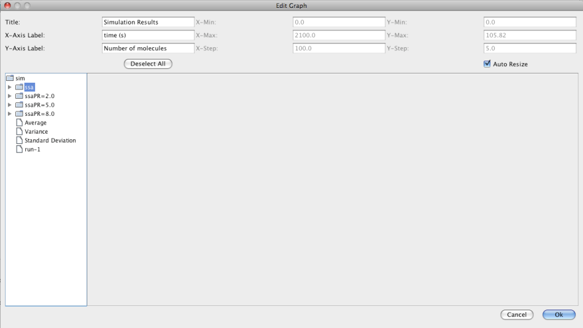
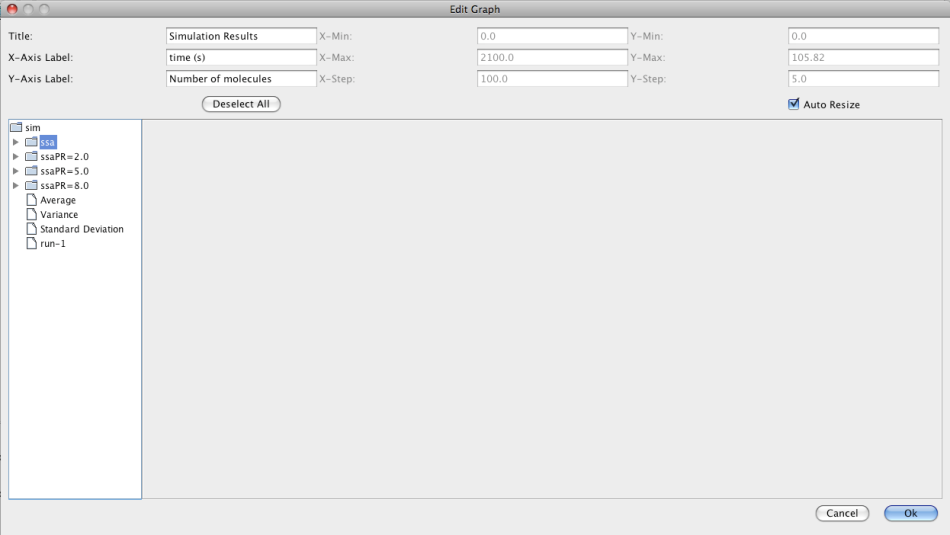

iBioSim Tutorial
Chris J. Myers
Contents
1 Introduction
2 Project Management
3 Model Editor
4 Analysis Tool
5 Learn Tool
1 Introduction
iBioSim has been developed for the modeling, analysis, and design of genetic circuits. While the primary target of iBioSim is models of genetic circuits, models representing metabolic networks, cell-signaling pathways, and other biological and chemical systems can also be analyzed. iBioSim includes the following components:
- Model Editor - a tool to create a model of a genetic circuit or other biological system.
- LPN Model Editor - a tool to create a model using a labeled Petri net (LPN).
- Analysis Tool - an abstraction-based ODE, Monte Carlo, and Markov analysis tool.
- TSD Graph Editor- a tool to visualize TSD files.
- Histogram Graph Editor - a tool to visualize probability data.
This tutorial illustrates each of these features of iBioSim using a simple model for the cI and cII genes and the PR and PRE promoters from the phage λ decision circuit.
2 Project Management
Within iBioSim, all files are collected within projects. A project is a collection of models, analysis views, learn views, and graphs. As shown below, iBioSim displays all project files on the left, the open models, views, and graphs on the right, and a log of all external commands on the bottom. The menu bar is located on the top of the window in the Windows and Linux versions. It is located on the top of the screen in the MacOS version.
 To create a new project, select New → Project from the File menu as shown below. You will then be prompted to browse to a desired location and to give a name to the project directory. Enter the name Tutorial. After you do this, click the new button and a new project directory will be created.
To create a new project, select New → Project from the File menu as shown below. You will then be prompted to browse to a desired location and to give a name to the project directory. Enter the name Tutorial. After you do this, click the new button and a new project directory will be created.

3 Model Editor
After you have created a project, you can create a new model to add to the project by selecting New → Model from the File menu as shown below. You will then be prompted to enter a model id. Enter lambda (do not select "Make Grid" at this time). At this point, a Model editor will open in a new tab.


 To add a chemical species, select the Add Species icon
To add a chemical species, select the Add Species icon  and click on the schematic canvas. This will drop a new species with default ID and other values. You may change these defaults by double-clicking on the species to open the Species Editor. In this case, let us change the ID to CI and units to mole. We will leave all other values at their default values. One thing that is important to note is that when this model is analyzed a default degradation reaction will be created which has a rate of 0.0075. If you do not want a degradation reaction, you must change "default" to "custom" and change the degradation rate to 0.
and click on the schematic canvas. This will drop a new species with default ID and other values. You may change these defaults by double-clicking on the species to open the Species Editor. In this case, let us change the ID to CI and units to mole. We will leave all other values at their default values. One thing that is important to note is that when this model is analyzed a default degradation reaction will be created which has a rate of 0.0075. If you do not want a degradation reaction, you must change "default" to "custom" and change the degradation rate to 0.
 Add another species for the CI dimer molecule. Edit this species to set its ID to CI2 and change its units to mole. This species is created using a complex formation reaction with an equilibrium constant of 0.1 M−1. Change default to custom for the complex formation rate and set it to this rate as shown below.
Add another species for the CI dimer molecule. Edit this species to set its ID to CI2 and change its units to mole. This species is created using a complex formation reaction with an equilibrium constant of 0.1 M−1. Change default to custom for the complex formation rate and set it to this rate as shown below.
 The next step is to add a complex formation reaction to convert CI monomers into CI dimers. Select the complex formation icon
The next step is to add a complex formation reaction to convert CI monomers into CI dimers. Select the complex formation icon  , highlight the CI species, and while holding the mouse button stretch the complex formation arc to the CI2 species. If you double click on the complex formation arc, an influence editor will open which indicates that this is a complex formation arc and the stoichiometry of binding (i.e., the number of molecules of the source species used to construct the sink species) is 2. The default in this case is correct as it does take two molecules of CI to make CI2.
, highlight the CI species, and while holding the mouse button stretch the complex formation arc to the CI2 species. If you double click on the complex formation arc, an influence editor will open which indicates that this is a complex formation arc and the stoichiometry of binding (i.e., the number of molecules of the source species used to construct the sink species) is 2. The default in this case is correct as it does take two molecules of CI to make CI2.
 Next, let's add the PR promoter which initiates transcription of the gene that produces the protein CII. To do this, select the promoter icon
Next, let's add the PR promoter which initiates transcription of the gene that produces the protein CII. To do this, select the promoter icon  , and click on the schematic canvas to drop the promoter with a default ID and parameter values. Double click on the promoter to bring up the promoter editor. Change the ID to PR and customize the RNAP binding equilibrium to be 0.69422, as well as, the open complex production rate to be 0.014.
, and click on the schematic canvas to drop the promoter with a default ID and parameter values. Double click on the promoter to bring up the promoter editor. Change the ID to PR and customize the RNAP binding equilibrium to be 0.69422, as well as, the open complex production rate to be 0.014.
 The PR promoter is repressed by the CI2 species. To create this relationship, select the repression arc icon
The PR promoter is repressed by the CI2 species. To create this relationship, select the repression arc icon
 , highlight the CI2 species, and while holding the mouse button stretch the repression arc to the PR promoter. Next, double click on the repression arc to bring up the influence editor. In this editor, customize the stoichiometry of binding to 1 indicating that just one CI dimer is necessary to repress this promoter and change the repression binding equilibrium to 0.2165.
, highlight the CI2 species, and while holding the mouse button stretch the repression arc to the PR promoter. Next, double click on the repression arc to bring up the influence editor. In this editor, customize the stoichiometry of binding to 1 indicating that just one CI dimer is necessary to repress this promoter and change the repression binding equilibrium to 0.2165.
 As mentioned earlier, the PR promoter initiations the production of the CII species. Add the CII species following the steps given earlier for adding a species. Then, highlight the PR promoter and while holding the mouse button stretch the production arc to the CII species. Note that the icons selected for this are not important because all arcs from promoters to species are always production arcs.
As mentioned earlier, the PR promoter initiations the production of the CII species. Add the CII species following the steps given earlier for adding a species. Then, highlight the PR promoter and while holding the mouse button stretch the production arc to the CII species. Note that the icons selected for this are not important because all arcs from promoters to species are always production arcs.
 Finally, CII species activates the production of the CI species from the PRE promoter. Promoters do not need to always be drawn. They can also be implicit on an influence. To add an activation arc with an implicit promoter, select the activation arc icon
Finally, CII species activates the production of the CI species from the PRE promoter. Promoters do not need to always be drawn. They can also be implicit on an influence. To add an activation arc with an implicit promoter, select the activation arc icon  , highlight the CII species, and while holding the mouse button stretch the activation arc to the CI species. This creates not only the influence but also a default promoter. Double click on the activation arc to bring up the influence editor. In this editor, customize the stoichiometry of binding to 1 indicating that just one CII molecule is necessary to activate this promoter and change the activation binding equilibrium to 0.00161. Finally, click on the edit promoter button and change the ID of this promoter to PRE. Also, customize the RNAP binding equilibrium to be 0.01, the basal production rate to be 0.00004, and the activated production rate to be 0.015.
, highlight the CII species, and while holding the mouse button stretch the activation arc to the CI species. This creates not only the influence but also a default promoter. Double click on the activation arc to bring up the influence editor. In this editor, customize the stoichiometry of binding to 1 indicating that just one CII molecule is necessary to activate this promoter and change the activation binding equilibrium to 0.00161. Finally, click on the edit promoter button and change the ID of this promoter to PRE. Also, customize the RNAP binding equilibrium to be 0.01, the basal production rate to be 0.00004, and the activated production rate to be 0.015.


 At this point, make sure your model has been saved by either clicking on the Save icon
At this point, make sure your model has been saved by either clicking on the Save icon  or selecting the Save option from the File menu.
or selecting the Save option from the File menu.
4 Analysis Tool
This section describes how to analyze the model just created. The first step is to create an analysis view. To do this, right click on the model file and select Create Analysis View. Enter the analysis ID simLambda. At this point, a new analysis view should open. You should also notice that an icon appears next to your model file. When you click on this, it will show you all of the analysis and learn views associated with this model.

 In order to perform analysis, the analysis tool first converts the model into a reaction-based model in the Systems Biology Markup Language (SBML). There are three different ways to see the reaction-based model that is produced. If GraphViz is installed on your computer, you can select Network for your Simulation Type. Then, either press the Save and Run icon
In order to perform analysis, the analysis tool first converts the model into a reaction-based model in the Systems Biology Markup Language (SBML). There are three different ways to see the reaction-based model that is produced. If GraphViz is installed on your computer, you can select Network for your Simulation Type. Then, either press the Save and Run icon  or select the Save and Run option from the File menu. The result will be a GraphViz window will open showing the reaction-based model such as the one shown below for our example. If it does not open in GraphViz, make sure that you have files with the .dot file extension associated with GraphViz on your computer. You can also view the model in a web browser by selecting Browser for your simulation type. In this case, you should ensure that you have files with the .xhtml extension associated with your favorite browser. Finally, you can save the reaction-based model by selecting Model as your simulation type. In this case, you must provide a new model ID. This new model will appear in your project, and it can be opened in the Model Editor. Since this model does not include any layout information, you will need to either lay it out by hand or using one of the default layout routines selectable using the Apply Layout icon
or select the Save and Run option from the File menu. The result will be a GraphViz window will open showing the reaction-based model such as the one shown below for our example. If it does not open in GraphViz, make sure that you have files with the .dot file extension associated with GraphViz on your computer. You can also view the model in a web browser by selecting Browser for your simulation type. In this case, you should ensure that you have files with the .xhtml extension associated with your favorite browser. Finally, you can save the reaction-based model by selecting Model as your simulation type. In this case, you must provide a new model ID. This new model will appear in your project, and it can be opened in the Model Editor. Since this model does not include any layout information, you will need to either lay it out by hand or using one of the default layout routines selectable using the Apply Layout icon  ,
,


 Next, click on the SBML elements tab. This tab allows you to select which SBML model elements to include in your analysis. This includes initial assignments, rules, constraints, and events. Initially, let's only include the rule to compute CI_total. Uncheck all the elements.
Next, click on the SBML elements tab. This tab allows you to select which SBML model elements to include in your analysis. This includes initial assignments, rules, constraints, and events. Initially, let's only include the rule to compute CI_total. Uncheck all the elements.
 Now, go back to the simulation options tab. Here, change the simulation type back to ODE, change the time limit to 2100.0, change the print interval to 10.0, and enter a Simulation ID of ode. Then, either press the Save and Run icon or select Save and Run option from the File menu.
After the simulation completes, click on the TSD Graph tab. Double click on the graph to bring up the graph editor.
Open the ode simulation, highlight Average, select CI_total and CII, change the Title to "ODE Simulation Results", change the X-Axis Label to "Time (seconds)", and change the Y-Axis Label to "Number of Molecules".
Press the OK button.
Now, go back to the simulation options tab. Here, change the simulation type back to ODE, change the time limit to 2100.0, change the print interval to 10.0, and enter a Simulation ID of ode. Then, either press the Save and Run icon or select Save and Run option from the File menu.
After the simulation completes, click on the TSD Graph tab. Double click on the graph to bring up the graph editor.
Open the ode simulation, highlight Average, select CI_total and CII, change the Title to "ODE Simulation Results", change the X-Axis Label to "Time (seconds)", and change the Y-Axis Label to "Number of Molecules".
Press the OK button.

 Graphs can be exported in a variety of formats including:
Graphs can be exported in a variety of formats including:
- Time series data format (TSD).
- Comma separated value (CSV).
- Column separated data (DAT).
- Encapsulated postscript (EPS).
- Joint Photographic Experts Group (JPG).
- Portable document format (PDF).
- Portable network graphics (PNG).
- Scalable vector graphics (SVG).
In order to export a graph, you can either click on the Export icon  or select one of the graph export options from the File menu. When using the Export icon, the type of file exported will depend on the extension provided to the file name. Click on the Export icon, browse to a location on your file system and enter the file name of ode.pdf to create a PDF file for your graph.
or select one of the graph export options from the File menu. When using the Export icon, the type of file exported will depend on the extension provided to the file name. Click on the Export icon, browse to a location on your file system and enter the file name of ode.pdf to create a PDF file for your graph.
 Now, select the Simulation Options tab again, select Monte Carlo, change the number of runs to 100, set the simulation ID to ssa, and click on the Save and Run icon. Click on the TSD Graph tab. Double click on the graph to bring up the graph editor. Open the ssa simulation directory, and highlight run-1.
Select CI_Total and CII, change the title to "SSA Simulation Results", change the X-Axis Label to "Time (seconds)", and change the Y-Axis Label to "Number of Molecules". Press the OK button. Click on the
Export icon and enter the file name ssa-1.pdf. Repeat these steps to generate graphs for the average (
average.pdf) and standard deviation (stddev.pdf). Note that you can use the "Deselect All" button to
remove all items from the graph.
Now, select the Simulation Options tab again, select Monte Carlo, change the number of runs to 100, set the simulation ID to ssa, and click on the Save and Run icon. Click on the TSD Graph tab. Double click on the graph to bring up the graph editor. Open the ssa simulation directory, and highlight run-1.
Select CI_Total and CII, change the title to "SSA Simulation Results", change the X-Axis Label to "Time (seconds)", and change the Y-Axis Label to "Number of Molecules". Press the OK button. Click on the
Export icon and enter the file name ssa-1.pdf. Repeat these steps to generate graphs for the average (
average.pdf) and standard deviation (stddev.pdf). Note that you can use the "Deselect All" button to
remove all items from the graph.

 Another way to view simulation results is on the schematic. To do this, click on the schematic tab. At the bottom of the window, select the Choose Simulation button which brings up a window with all the simulations in this analysis view. Open the ssa directory, select run-1.tsd, and press OK.
Another way to view simulation results is on the schematic. To do this, click on the schematic tab. At the bottom of the window, select the Choose Simulation button which brings up a window with all the simulations in this analysis view. Open the ssa directory, select run-1.tsd, and press OK.
 Now, click on the CI species which brings up the Edit Species window. Select the Appearance tab. Here you can select how you want the species to appear as you playback the simulation. You can have it change color on a gradient, change size, or change opacity. You can also select the range of molecule counts to use for the gradients. Finally, you can indicate that these selections are either for this species or all species in the model. For our example, let's make CI follow a green color gradient, CI2 follow a red color gradient, and CII follow a blue color gradient.
Now, click on the CI species which brings up the Edit Species window. Select the Appearance tab. Here you can select how you want the species to appear as you playback the simulation. You can have it change color on a gradient, change size, or change opacity. You can also select the range of molecule counts to use for the gradients. Finally, you can indicate that these selections are either for this species or all species in the model. For our example, let's make CI follow a green color gradient, CI2 follow a red color gradient, and CII follow a blue color gradient.
 Once you have made your selections, you can now playback the simulation. You can either single step the simulation by pressing the
Once you have made your selections, you can now playback the simulation. You can either single step the simulation by pressing the  icon or play continuously by pressing the
icon or play continuously by pressing the  icon. The playback can also be paused by pressing the
icon. The playback can also be paused by pressing the  icon and restarted by pressing the
icon and restarted by pressing the  icon.
icon.
 Using the schematic tab, you can also adjust initial values and parameters allowing one to perform simulations to determine the effect of these changes. Clicking on any species, promoter, reaction, or influence brings up the corresponding editor. To change a value, switch the corresponding combo box to modified which will then allow you to change the value. For example, as shown below, we have reduced the degradation rate for CI to 0.00075. Now, rerun the simulation and observe the change in the simulation data.
Using the schematic tab, you can also adjust initial values and parameters allowing one to perform simulations to determine the effect of these changes. Clicking on any species, promoter, reaction, or influence brings up the corresponding editor. To change a value, switch the corresponding combo box to modified which will then allow you to change the value. For example, as shown below, we have reduced the degradation rate for CI to 0.00075. Now, rerun the simulation and observe the change in the simulation data.
 In addition to making single changes, you can also sweep a value as shown below. When you click on the Sweep button, it brings up a window where you can select the start value, the stop value, and the step value. In this example, simulations are generated using degradation rates of 0.001, 0.003, 0.005, and 0.007. The level indicates how the sweep should perform when multiple variables are swept at the same time. A variables at the same level are changed at the same time. Furthermore, all variables on level 2 are stepped through all their values before changing the values of those variables on level 1. After the values on level 1 are changed, the values on level 2 are stepped through all their values again. Rerun the simulation and create a graph that shows the value of CI for each of the different degradation rates.

The efficiency of simulation can be improved by employing various automatic abstraction techniques. Go back to the Schematic tab and change the degradation rate of CI back to the default value. Also, go to the SBML elements tab and uncheck the rule for CI_total. To activate abstraction, click on the Simulation Options tab, select Abstraction and change the simulation ID to abs. Press the Save and Run icon and note that the simulation time is substantially faster. Plot both the SSA results for CI_total and CII with the abstraction results for CI (note this is now equivalent to CI_total after abstraction) and CII.
In addition to making single changes, you can also sweep a value as shown below. When you click on the Sweep button, it brings up a window where you can select the start value, the stop value, and the step value. In this example, simulations are generated using degradation rates of 0.001, 0.003, 0.005, and 0.007. The level indicates how the sweep should perform when multiple variables are swept at the same time. A variables at the same level are changed at the same time. Furthermore, all variables on level 2 are stepped through all their values before changing the values of those variables on level 1. After the values on level 1 are changed, the values on level 2 are stepped through all their values again. Rerun the simulation and create a graph that shows the value of CI for each of the different degradation rates.

The efficiency of simulation can be improved by employing various automatic abstraction techniques. Go back to the Schematic tab and change the degradation rate of CI back to the default value. Also, go to the SBML elements tab and uncheck the rule for CI_total. To activate abstraction, click on the Simulation Options tab, select Abstraction and change the simulation ID to abs. Press the Save and Run icon and note that the simulation time is substantially faster. Plot both the SSA results for CI_total and CII with the abstraction results for CI (note this is now equivalent to CI_total after abstraction) and CII.
 One way to understand why abstraction is so much faster is by looking at the complexity of the reaction-based model before and after abstraction. The reaction-based model after abstraction is shown below which is clearly much simpler than the full model shown earlier.
One way to understand why abstraction is so much faster is by looking at the complexity of the reaction-based model before and after abstraction. The reaction-based model after abstraction is shown below which is clearly much simpler than the full model shown earlier.

5 Learn Tool
This section describes how a model can be learned from time series data using iBioSim's Learn Tool. To demonstrate the Learn Tool, first create a simple model, lambdaLearn, which just includes the two species CI and CII as shown below. Next, create a learn view by right clicking on this model file and selecting Create Learn View. Give this learn view the ID learnLambda. At this point, a new learn view should open. You should also notice that an icon appears next to your model file. When you click on this, it will show you all of the analysis and learn views associated with this model.
 The next step is to add some experimental data from which you wish to learn a model. In this demo, we will just utilize our simulation data as synthetic experimental data. To do this, click Copy From View, and select simLambda/abs. Highlight simLambda/abs/run-1.tsd, and you should see the simulation data for CI and CII appear on the right in the data editor.
The next step is to add some experimental data from which you wish to learn a model. In this demo, we will just utilize our simulation data as synthetic experimental data. To do this, click Copy From View, and select simLambda/abs. Highlight simLambda/abs/run-1.tsd, and you should see the simulation data for CI and CII appear on the right in the data editor.
 Now, click on the Learn tab. Here you can edit the various learning options. For example, you can either use auto generated levels or user generated levels for your data encoding. Select Use User Generated Levels which will make the levels below editable. You can also select how many bins to use. Change the number of bins for both CI and CII to 3. At this point, you can ask the tool to suggest levels by clicking on the Suggest Levels button. Finally, click on the Save and Run icon which will bring up the model that has been learned from this experimental data
using Graphviz's dotty program, and ask you for a model ID for the generated model.
Now, click on the Learn tab. Here you can edit the various learning options. For example, you can either use auto generated levels or user generated levels for your data encoding. Select Use User Generated Levels which will make the levels below editable. You can also select how many bins to use. Change the number of bins for both CI and CII to 3. At this point, you can ask the tool to suggest levels by clicking on the Suggest Levels button. Finally, click on the Save and Run icon which will bring up the model that has been learned from this experimental data
using Graphviz's dotty program, and ask you for a model ID for the generated model.

File translated from
TEX
by
TTH,
version 3.81.
On 25 Aug 2011, 19:20.